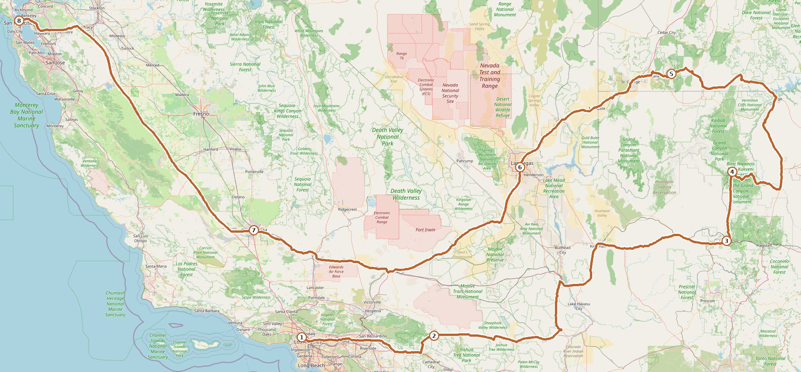

行程总览
11.03周二洛杉矶 · 落地休整
- 落地倒时差，机场→好莱坞（FlyAway 巴士）
宿 好莱坞
11.04周三洛杉矶 · 好莱坞与日落
- 好莱坞标志、星光大道
- 傍晚格里菲斯天文台方向看日落
宿 好莱坞
11.05周四洛杉矶 → 约书亚树 · 荒漠星空约 140 mi / 2.5h
- 上午取车，走 I-10 → CA-62
- 傍晚进约书亚树国家公园，夜里看星空
宿 Yucca Valley
11.06周五66号公路 · 复古小镇巡礼约 290 mi / 4.5–5h
- 走 66 号公路，Amboy Roy's、Bagdad Café 打卡
- 傍晚到 Williams，66 号主街小镇
宿 威廉姆斯 Williams
11.07周六大峡谷南缘 · 东线连玩带穿约 200 mi / 4.5h
- 10:00 出发，南门进园：Mather / Yavapai Point 快看
- Desert View Drive 东行：Grandview、Lipan Point、Desert View Watchtower，14:30 东门出园零回头路
- 15:30 到 Kanab 住下，晚饭 + 超市补水
宿 Kanab
11.08周日锡安 · 全天 → 拉斯维加斯约 160 mi / 2.5h
- 8:00 Kanab 出发，穿隧道玩 Canyon Overlook，游客中心坐观光班车 + 步道（Riverside Walk / Emerald Pools）
- 傍晚出园，I-15 南下到拉斯维加斯，晚上 Strip
宿 拉斯维加斯
11.09周一拉斯维加斯 → 洛杉矶约 270 mi / 4.5h
- 上午 North Premium Outlets 购物
- 14:00 出发，I-15 直回洛杉矶，宿机场附近
宿 洛杉矶（机场附近）
11.10周二洛杉矶 ✈️ 旧金山✈️ 约 1.5h
- 早上机场还车，航班飞旧金山
- 下午抵达，本段到此结束
🌇 11 月日落约 16:45–17:00，长途段都排在白天
🎫 国家公园年票 America the Beautiful $80/车，约书亚树 + 大峡谷 + 锡安已回本
🌡️ 荒漠昼夜温差大：约书亚树夜里 5°C，大峡谷清晨 0°C 上下，锡安峡谷早晚冷，羽绒和防晒都要带
🎫 国家公园年票 America the Beautiful $80/车，约书亚树 + 大峡谷 + 锡安已回本
🌡️ 荒漠昼夜温差大：约书亚树夜里 5°C，大峡谷清晨 0°C 上下，锡安峡谷早晚冷，羽绒和防晒都要带
路线地图

①洛杉矶 11.03 · ②约书亚树 11.05 · ③威廉姆斯 11.06 · ④大峡谷南缘 11.07 · ⑤锡安 11.08 · ⑥拉斯维加斯 11.08 · ⑦洛杉矶 11.09 · ⑧旧金山 11.10
橙实线 = 自驾环线 · 蓝虚线 = 11.10 洛杉矶✈️旧金山 · 底图 © OpenStreetMap contributors
橙实线 = 自驾环线 · 蓝虚线 = 11.10 洛杉矶✈️旧金山 · 底图 © OpenStreetMap contributors